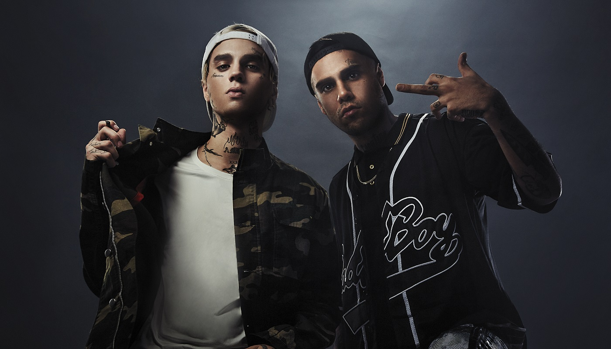
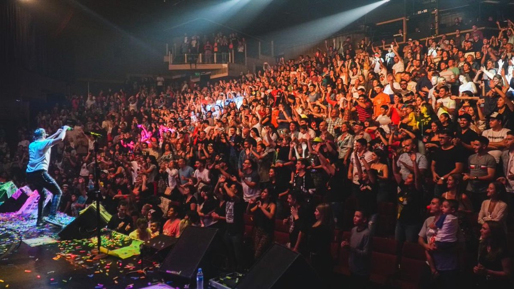
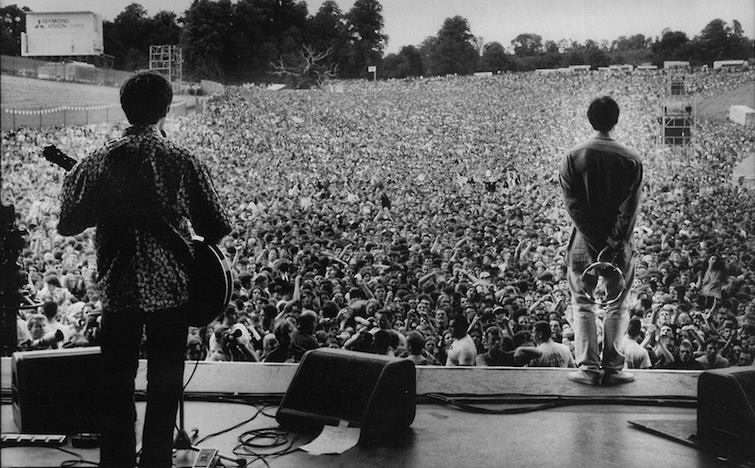

NUESTRA HISTORIA
INICIOS
La banda fue formada en marzo de 2004 por CRO (voz, guitarra), Kaktov (Voz y Bajo) Michael (DJ) y Joey (Teclado y Coros). Los cuatro miembros originales eran de dos grupos diferentes, DOPE GROUP (que más tarde fue reformado) y QUIFING. Posteriormente, los miembros decidieron combinar los nombres de los dos grupos antes mencionados y así surgió el nombre QUIF GROUP. Los de DOPE eran CRO Y Kaktov mientras que de QUIFING llegaron MICHAEL y ROSS. Joey originalmente de QUIFING, abandonó la formación pocos días después de la creación del grupo siendo reemplazado por ROSS quien debutaría con los demás en el primer show de la banda el 27 de marzo de 2004 en la TRASTIENDA. Finalizado su séptimo espectáculo, el 25 de mayo en GROOVE, el bajista Kaktov fue expulsado de la banda debido a diferencias con CRO, tras su salida refundo DOPE GROUP. En su lugar llego Homer quien tenía experiencia previa en varias bandas, además de tener buena relación con CRO por haber formado parte de una alineación de DOPE solo unos meses atrás. Con esta formación (CRO, HOMER, MICHAEL Y ROSS) alcanzarian la fama mundial. Su debut se daría el 21 de junio en el CLUB UNION.
PRIMEROS AÑOS
En sus primeros años la banda no brindo una gran cantidad de shows. Hasta su primer disco en 2006, 25 fueron los shows realizados. Llega la grabación del primer disco y la banda se encuentra con muchas dificultades, CRO sufre una disfonía que lo deja sin poder grabar, esto retrasando la grabación 1 mes, a su vez, ROSS tiene problemas familiares que tampoco le dejarían asistir al estudio. Después de 10 largos meses el 4 de noviembre de 2006 llega “MONSTER” el primer disco de estudio de la banda y el que los llevaría a la fama mundial. A partir de ahí es todo ascenso en la historia de la banda. En 2008 llega “MOONLIGHT”, un antes y un después para ellos. En este disco se encuentran colaboraciones estelares como Eminem, Jay-z, Dr Dre, entre otros. Se posiciono TOP 1 del mundo en Billboard durante 16 semanas consecutivas y llevándose el GRAMMY a mejor disco de RAP ese mismo año.
SEPARACION
El 2009 fue un año trágico para el grupo. Con la grabación de “HELL”, llegaron los problemas. Fue un disco muy discutido, con muchas idas y vueltas generando una incomodidad entre los integrantes. Sale el disco y el éxito fue mucho menos de lo esperado, la gente de una forma u otra pudo percibir esa no conexión entre los integrantes. Los integrantes se toman un descanso de shows y presentaciones y el 1 junio del año 2010, el grupo lanza un comunicado informando a sus fans la separación del mismo creando un gran disgusto y enojo entre los fanáticos.
REUNION
Pasaron 6 años desde el ultimo comunicado de la banda y mas de 7 desde su última aparición juntos. Pero llega el día 24 septiembre del año 2016 y hay un nuevo comunicado del grupo, informando que el 4 de noviembre de ese mismo año la banda presentaba nuevo disco de estudio “PHILY” e iba dar una serie shows alrededor del mundo para presentarlo. La banda conto que hacia 2 años ya que habían arreglado sus diferencias y que este ultimo disco les llevo 1 año y medio producirlo. Tanto esfuerzo se vio reflejado porque este se posesionaria TOP 1 en el ranking Billboard durante 32 semanas, un récord absoluto alrededor del mundo. Desde entonces el grupo sigue vigente y este año 2022 lanzo su ultimo disco de estudio “CLOWN”, recibiendo excelentes criticas y dejando muy contentos a sus fans.
